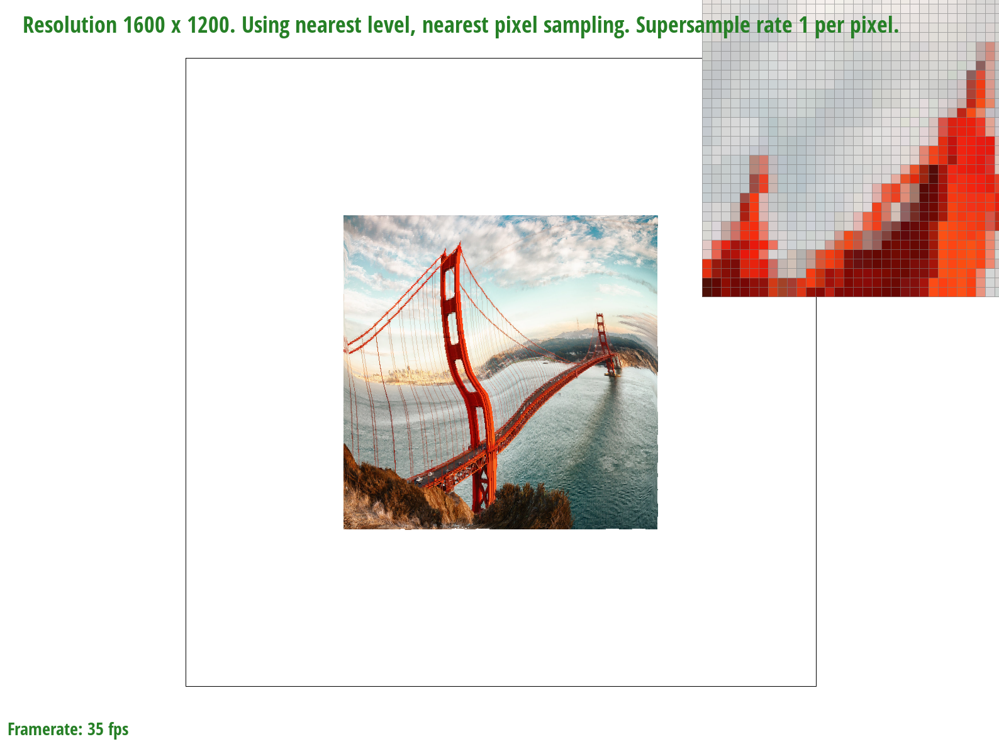

Overview
In this homework, I implemented the rasterization and texture mapping pipeline, optimising the resultant image with various techniques such as pixel sampling, increasing the sampling rate, and level sampling. The implementation of these techniques, and how they impact the final image visually have been eye-opening and interesting to say the least. Grateful for the opportunity to be able to transform the theoretical knowledge from lectures into practical implementation.
Section I: Rasterization
Part 1: Rasterizing single-color triangles
The steps to rasterize triangles were done as follows:
- Retrieve the bounding box of the triangle, by taking the minimum and maximum x and y coordinates of the triangle.
- With the 3 vertices of the triangle, determine the slope of the 3 edges of the triangle, and find the line equation of the 3 sides of the triangle.
- For each pixel within the bounding box, find the midpoint of the pixel, and take a sample at that point.
- Determine whether the midpoint lies within the triangle, by using the line equation of the 3 edges. If Li for all 3 edges is all negative or all positive, then the point lies within the triangle.
- Write the color of the triangle to that particular pixel in the frame buffer if its midpoint lies within the triangle.
- In my implementation, the OpenGL edge rules were not implemented. Instead, all points lying directly on the line were considered to be part of the triangle.
- The winding order of the vertices do not matter in my implementation, as my implementation of the 3 line test looks out for points which give all positive OR all negative results. If the vertices were given in a clockwise order, a point within the triangle will give all negative results, and vice versa.
- My algorithm is as efficient as one that checks each sample within the bounding box of the triangle. My implementation checks each pixel within the bounding box of the triangle for whether they lie within the triangle. The bounding box is determined by the maximum and minimum x and y coordinates of the triangle.
Part 2: Antialiasing triangles
For my supersampling algorithm, the data structure used is a standard c++ vector, of size width * height * sample rate.
My supersampling algorithm dynamically calculates the stride length from the sample rate.
For instance, for a sampling rate of 4, we will divide each pixel into a 2x2 grid and sample each square in the grid, with a stride length of 0.5 pixels.
Using this stride length, which I call the 'sample width' in my code, for each pixel within the bounding box of the triangle, my algorithm takes the corresponding number of samples according to the sample rate.
For each sample, we determine whether the sample lies within the triangle using the 3 lines test as mentioned in Part 1. If the sample lies within the triangle, the color of the triangle is written to the sample buffer at index sample rate * (y * width + x) + sample index.
The sample buffer is then resolved to the frame buffer, by taking the average RGB values of the samples at each pixel, and writing the average RGB value to the corresponding pixel in the frame buffer.
Supersampling is useful as it achieves antialiasing without increasing the resolution of the image. The 'jaggies' effect in the original image is reduced with supersampling.
The modifications made to the rasterization pipeline were:
- Dynamic resizing of the frame buffer to store information for supersampling
- Sample each pixel x times according to the sample rate, instead of just once
- Alter the frame buffer resolution process to take the average of the x number of samples within the pixel.
|
|
|

|
From the images above, we notice more blurring at the edges as the sample rate increases. This is because as the sample rate increases, at the edges, the supersampling algorithm samples a mix of points outside and within the triangle. This causes certain samples within each pixel to be coloured red, whilst others are coloured white. Upon writing these pixels to the framebuffer, the average of the colours of these samples are taken, resulting in a fader red as compared to the centre of the triangle.
Part 3: Transforms
The updated cubeman here is doing a 'dab'.
Section II: Sampling
Part 4: Barycentric coordinates

{kind=link}
Barycentric coordinates are a coordinate system for a triangle, whereby the position of any point within the triangle is determined by 3 numbers (coordinates), which represent the point's relative distance to the triangle's vertices. These 3 numbers are given by α, β, γ. For example, a point with α=1, β=0, γ=0 represents one of the vertices of the triangle, while a point with α=1/3, β=1/3, γ=1/3 represents the geometric centre of the triangle.
In the triangle above, the colors red, blue and green are mixed in different proportions according to the coordinate's barycentric coordinates. The closer a point to a particular vertex, the more dominant that vertex's color will be in the mix. As we move around inside the triangle, the colors bend smoothly from one vertex to another, demonstrating how barycentric coordinates work by mixing the influences (in this case, colors) of the triangle's vertices.
Part 5: "Pixel sampling" for texture mapping
In the context of texture mapping, pixel sampling is a technique used to determine the colors of the new pixels to be displayed based on the original image. Texture mapping inolves applying an image onto the surface of a 3D object, which enlarges / scales the image. Pixel sampling is hence responsible for deciding how to fill in or remove extra pixels during these transformations.
Different pixel sampling methods:
- Nearest pixel sampling: Selects the color of the nearest pixel to the point being sampled, and uses that color.
- Bilinear sampling: Selects the closest 4 pixels around the point being sampled and calculates the color based on a weighted average of these pixels. The weights depend on the distance of each of these 4 pixels to the point being sampled. Bilinear sampling produces smoother and more blended results than nearest neighbour sampling.
- Nearest pixel sampling: For each sample point, I determined the closest pixel (by rounding both coordinates of the point), found the color of the texel, and applied its color directly.
- Bilinear sampling: For each sample point, I identified the 4 nearest texels, then calculated the weighted average of these texels' colors based on their distances to the exact point on the texture being sampled.
|
|
|
|
|
|
Relative differences in the screenshots above:
- Sampling methods (Nearest vs bilinear sampling): Bilinear sampling produces a much smoother image by generating smoother gradients between regions of sharp color change and more natural-looking details.
- Sampling rate (1 vs 16 samples per pixel): An increase in the sampling rate, similarly produces smoother gradients between regions of sharp color change, giving a smoother look to the image.
- Texture stretching: When textures are significantly stretched, nearest neighbour sampling produces visibly blocky effects, whereas bilinear sampling smoothens out these artifacts.
- Fine detail: In areas with fine detail, nearest neighbour sampling might lose some detail or make it appear pixelated, while bilinear sampling preserves more detail and smoothness.
- Edges and gradients: For textures with smooth gradients or edges, bilinear sampling maintains the gradient more naturally, avoiding the stair-stepping effect that nearest neighbour sampling might produce.
Part 6: "Level sampling" with mipmaps for texture mapping
Level sampling is a technique used in texture mapping to improve rendering performance and image quality when textures are displayed at various sizes or distances from the viewer. Level sampling involves selecting the appropriate level of texture detail before performing pixel sampling.
In my implementation, the algorithm dynamically takes the longer pixel-to-pixel length in the transformed texture space, and uses that length (L) to determine the appriopriate mipmap level to use (D). An image of the calculations of D and L are shown in the image above, taken from the CS184 slides.
Trade-offs between sampling techniques- Pixel Sampling: Choosing a bilinear pixel sampling technique will negatively impact performance, due to additional weighted average calculations required. If speed is priority, nearest neighbour pixel sampling is optimal. Another point to note is that both nearest neighbour and bilinear sampling techniques could potentially still suffer from aliasing when textures are minified.
- Level Sampling: Utilising level sampling incurs additional memory as multiple versions of each texture will have to be stored. Additionally, selecting the appropriate mipmap level also adds some overhead which could reduce the performance of the program.
- No. of samples per pixel: Increasing the number of samples per pixel greatly improves image quality, but comes at a huge performance cost, especially at very high sampling rates. Not to mention, it also necessitates additional buffer storage to store the individual sample color values.
|
|
|
|

|
|